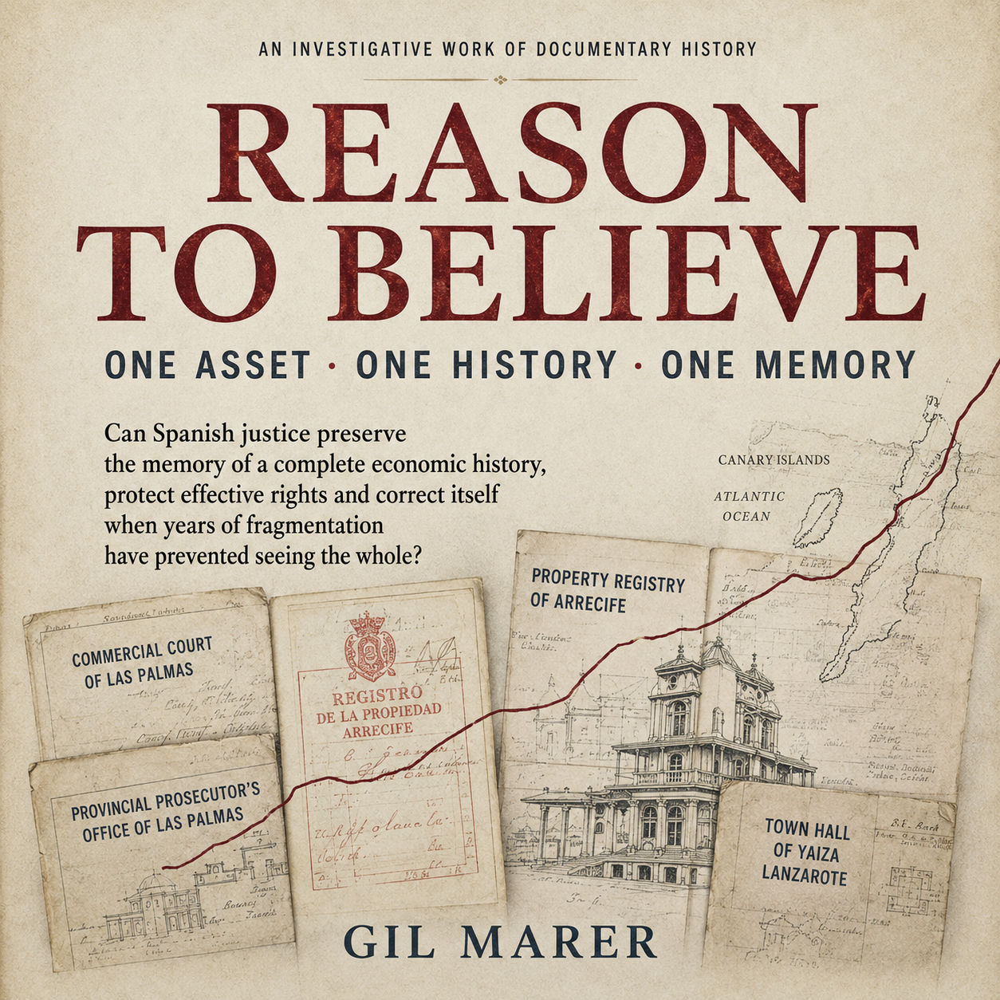

One asset
The physical and economic object remains continuous even when creditors, control, companies, operators, proceedings or branding change.
Flagship book · documentary investigation
ONE ASSET. ONE HISTORY. ONE MEMORY.
By Gil Marer
A citizen can experience one continuous problem while the legal system divides it among proceedings, courts, prosecution, insolvency, enforcement, registries and public administrations. Reason to Believe asks whether the rule of law can retain the memory of a complete economic history, protect effective rights and correct itself when years of fragmentation have prevented anyone from seeing the whole.

The thesis
Sun Park / MYND Yaiza is the documented case through which a larger question is tested: can justice preserve continuity when one history is distributed among multiple files and institutions?
The citizen experiences one problem. The system creates many cases. Justice needs a way to remember that they belong to the same history.
The physical and economic object remains continuous even when creditors, control, companies, operators, proceedings or branding change.
Each legally separate act still occupies a place in one chronology of knowledge, cause, decision and consequence.
Effective protection requires the ability to recover what each actor and institution knew, received and decided—and how that relates to what happened later.
The rule-of-law test
The book does not begin from the assumption that the author is right about everything. It separates documented facts, allegations, inferences, adverse decisions and unresolved questions. The harder question is whether, if the complete record demonstrates legally relevant error, contradiction or harm, the system possesses mechanisms capable of recognising and correcting it.
Economic and property rights matter because they represent capital, labour, years of life, employment, security and autonomy. Effective judicial protection is not satisfied merely because procedures exist; a person must realistically be able to be heard, obtain relevant evidence, challenge adverse acts, preserve rights while disputes are determined, receive reasoned decisions, appeal and—where justified—obtain restoration or compensation.
The case
The physical location supplies visible continuity while its economic and legal history is distributed across insolvency, enforcement, credit, property, community governance, registries, public administration, prosecution and other tracks. The book uses that continuity to ask who retains sight of the whole.
The technology
AI enters later as a tool for searching, comparing and reconstructing a very large archive. It does not decide who is right and does not replace lawyers, judges or primary evidence. Its relevance is that it can change the economics of recovering factual continuity.
Another book, another history of the same place
The 50+ community, longer stays, friendship, participation, activities and lived experience of Sun Park have their own book. Reason to Believe uses that human history only to the extent needed to establish what the asset was and why it mattered.
Discipline
Material claims should be traceable to identifiable sources. Adverse evidence belongs in the story too. An adverse outcome does not itself prove corruption; a hypothesis does not become fact through repetition; and an institution that failed at one point may still be capable of correcting the result.
That is the meaning of the title: belief in the rule of law does not require believing that institutions never fail. It requires believing that they remain capable of recognising and correcting failure.